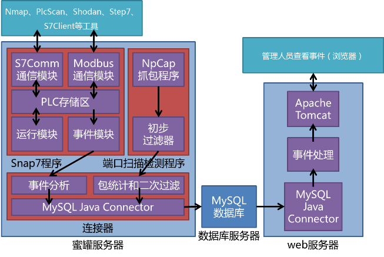

2 系统结构
本蜜罐系统分为蜜罐主机、数据库服务器、web服务器三个子系统。它们之间通过网络进行连接，对外提供的服务也都是网络服务。因此本蜜罐系统具有灵活部署的特性，三个子系统可以运行在同一台计算机上，也可以运行在不同的计算机上；一台数据库服务器可以只连接一个蜜罐主机，也可以连接多个形成蜜网。

系统结构图
2.1 蜜罐主机子系统
2.1.1 S7服务器
S7服务器是对Snap7的一个包装。它能够同时连接1024个客户端，面向客户端提供协商PDU、PLC控制、时钟、安全、读取系统状态、读写数据、读取块信息、上传下载块等功能，面向后台提供完善的事件记录功能。记录的内容主要包括事件发生的时间、客户端IP地址、客户端请求的功能、功能所带的主要参数（如系统状态的索引）以及是否发生错误。
2.1.2 Modbus服务器
Modbus服务器是对Snap7中s7_server模块的改写。同时也新增了plc_device模块，将原先嵌入在S7服务器中的PLC的存储区域独立出来，供两个服务器同时访问。它面向客户端提供读写线圈、读输入寄存器、读写保持寄存器、读设备信息等功能。它的事件记录内容与上面的S7服务器类似。
2.1.3 端口扫描检测
端口扫描检测模块使用NpCap抓取网络数据包。数据包首先经过NpCap的过滤语句进行过滤，仅提取出发送到蜜罐主机的TCP数据包；然后经过白名单过滤，白名单中包含数据库服务器和网络运营商，它们的数据包再多也不会被当作端口扫描；然后经过数据包密度过滤，如果同一IP地址在三分钟内发来的数据包超过50个，就开始跟踪记录，如果超过一分钟没有发来任何数据包，就停止跟踪记录。它可以同时跟踪记录多个端口扫描，记录的内容包括起止时间、数据包数量、访问的端口数量、网络流量、带各种flag的TCP报文数量（用于分析扫描类型）等。
2.1.4 数据库连接器
上面三个模块均采用C++语言编写，但由于编译选项的问题，它们只能分开编译成两个独立的程序。数据库连接器就起到了将它们采集到的信息汇总，并上传到数据库的作用。数据库连接器采用Java编写，是蜜罐主机子系统中第三个独立的程序，它具有存储重传功能，如果由于网络阻塞上传失败，它会稍后尝试重传。另外，它使用一个没有删除权限的数据库账号访问数据库，即使入侵者攻破了蜜罐主机，拿到了数据库连接器中的数据库账号密码，也没有办法删除数据。
2.2 数据库服务器
采用开源的关系型数据库——MySQL。本地调试时，使用本机上安装的mysql-8.0.12-win64版，在阿里云上部署时，使用基础版mysql-5.7数据库。访问数据库的连接为SSL连接，保证了信息安全。honeypot数据库下创建有s7_events、ids_captures、ids_statistics等数据表，分别存储S7与Modbus事件、捕获到的敏感数据包、跟踪到的疑似端口扫描事件。
2.3 web服务器
web服务器构建蜜罐系统的用户界面。它基于Apache的轻量级开源项目Tomcat，页面格式为html和jsp，用户使用浏览器即可查看蜜罐事件记录，具有并发、远程、多设备多平台、无需更新的优点。用户界面主要分为以下几个页面：
2.3.1 系统简介
包括“概述”“背景与计划”“系统结构”“系统原理”“分析与总结”五个部分。
2.3.2 用户
包括“登录/注销”“权限管理”“用户设置”三个子页面。用户在“登录/注销”页面，使用自己的数据库账号密码，像登录一般网站一样登录该监控系统。用户登录后才能查看监控记录，保证了信息安全。“权限管理”页面列出了用户在数据库的操作权限，用户可以在这里看到自己是普通用户还是高级用户。“用户设置”包括日期时间的显示格式、每页显示的结果数量等等。
2.3.3 监控记录
2.3.3.1 事件记录
记录了S7和Modbus服务器的事件。展示的事件表格有“时间”“主机”“客户端”“事件内容”四列，其中“主机”是一个编号，用于有多个蜜罐主机形成蜜网的条件下区分不同主机。事件内容分为服务器事件和访问事件两大类，服务器事件主要包括服务器启动和停止、用户的连接和断开等，访问事件主要包括协商PDU、PLC控制、时钟、安全、读取系统状态、读写数据、读取块信息、上传下载块等。这个页面还提供了事件过滤器，便于筛选出重要的事件以供分析。
2.3.3.2 端口访问
记录了发往敏感端口的数据包的相关信息。目前设定的敏感端口为S7的102和Modbus的502。
2.3.3.3 端口扫描记录
查看端口扫描检测的原始数据记录。如上文所述，过滤条件为同一IP地址（不在白名单中）在三分钟内发来的数据包超过50个，记录内容包括起止时间、数据包数量、访问的端口数量、网络流量、带各种flag的TCP报文数量（用于分析扫描类型）等。
2.3.3.4 端口扫描分析
对以上原始数据记录的分析。过滤条件为访问的端口数量不少于20个且不少于数据包总量的十六分之一。如果仅有SYN（同步）标志位的包数量超过四分之一，就判断为SYN扫描；如果没有任何标志位的包数量超过四分之一，就判断为NULL扫描；如果仅有FIN（结束）标志位的包数量超过四分之一，就判断为FIN扫描；如果有URG（紧急）PSH（数据）FIN（结束）标志位的包数量超过四分之一，就判断为Xmas-Tree扫描。
2.3.4 连接到蜜罐
包括两个小工具，提供了简单的S7和Modbus连接功能，用于蜜罐的测试。
2.4 代码量统计
| 模块名称 | 编程语言 | 功能 | 代码量 |
|---|---|---|---|
| 蜜罐PLC | C++ | 包含S7服务器和Modbus服务器 | 0 |
| 抓包程序 | C++ | 对NpCap的封装 | 0 |
| 数据库连接器 | Java | 运行端口扫描检测算法；收集数据上传到数据库 | 0 |
| web后端 | Java | 将蜜罐记录的事件码转化为文本；判断端口扫描类型 | 0 |
| web前端 | HTML, JSP, CSS, JS | 呈现用户界面 | 0 |
表1 代码量统计表